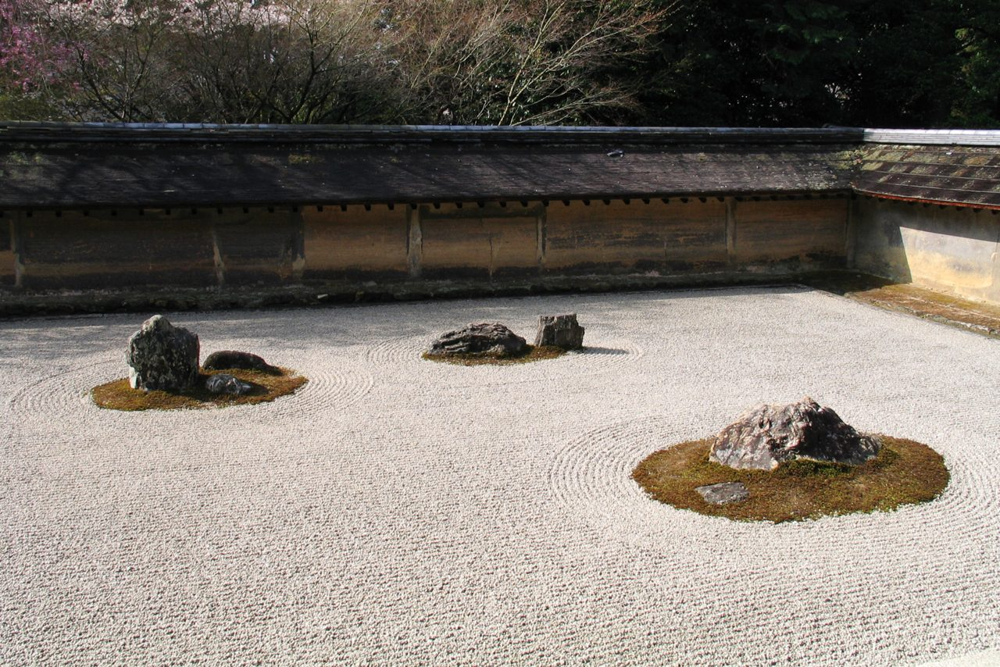

← 藝術101名畫背後的故事 EP17
龍安寺石庭（方丈庭園）
作者不詳（傳為相阿彌等，有爭議）・一般認為 15 世紀後半；現貌或定型於江戶時代

十五顆石頭，你永遠只看得到十四顆。
一片白砂，十五顆石
京都龍安寺的方丈石庭，東西約 25 公尺、南北約 10 公尺。十五顆石頭分成五組，從東到西是五、二、三、二、三。坐在方丈的木簷廊上，不管移到哪個位置，總有一顆被擋住。
誰做的？沒有答案
龍安寺建於 1450 年，但石庭的作者和年代都沒有定論。多數說法是 15 世紀後半，也有學者認為現在的樣子到江戶時代才定型。傳說作者是相阿彌，也沒有確證。
看石頭，也看牆
據說十五代表圓滿，看不全，是在說世上沒有完美——這是後人的解讀。石頭後面那道矮土牆，據說土裡揉了菜籽油，油滲出來，留下斑駁的花紋。
下次看到它，先看這裡
苔島與同心圓 石組立在青苔上，白砂耙成圓圈
油土塀 石後矮土牆，油漬形成斑駁紋
左側石組 苔上立石，四周白砂耙成直線
作品資料
作者不詳（傳為相阿彌等，有爭議）（Unknown (attributed variously, e.g. Sōami; disputed)）
《龍安寺石庭（方丈庭園）》Ryōan-ji Rock Garden，一般認為 15 世紀後半；現貌或定型於江戶時代
枯山水：白砂、石、苔、油土塀 約東西 25 公尺 × 南北 10 公尺（約 248 平方公尺）
日本京都 龍安寺（世界遺產「古都京都的文化財」）
《龍安寺石庭（方丈庭園）》Ryōan-ji Rock Garden，一般認為 15 世紀後半；現貌或定型於江戶時代
枯山水：白砂、石、苔、油土塀 約東西 25 公尺 × 南北 10 公尺（約 248 平方公尺）
日本京都 龍安寺（世界遺產「古都京都的文化財」）